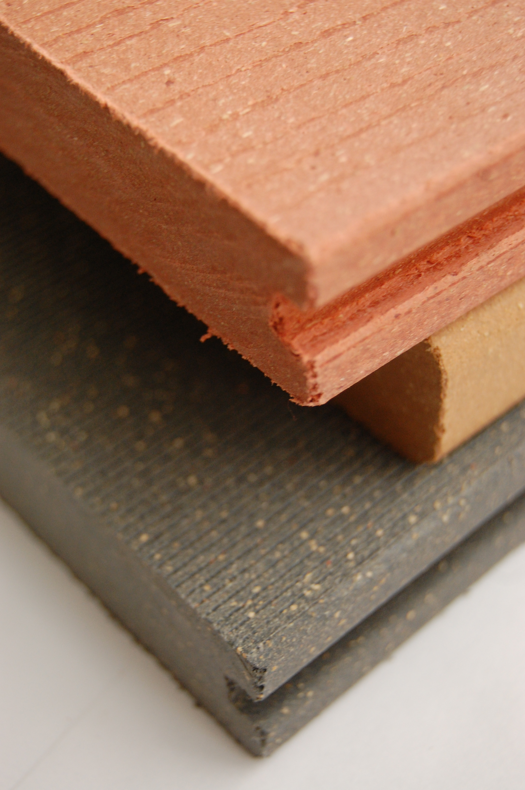

Что это за материал и как его делают
По ГОСТ Р 59555-2021 в ДПК должно быть не меньше 30 % древесной муки и первичный (не переработанный) пластик — полиэтилен (ПЭ, он же ПНД/HDPE), полипропилен (ПП) или ПВХ. На практике муки 40–70 %, пластика 24–40 %, остальное — добавки. Лага ДекМастер: 70 % муки и 30 % ПНД.
Экструдер — машина со шнеками, которая плавит смесь и давит её через фильеру. Фильера — стальная «формочка» с вырезанным профилем; новая стоит около 10 000 $ и делается месяцами, поэтому свой профиль заказывают только большими партиями.
Из чего состоит
- Древесная мука «М-180» (частицы ~0,07 мм) из опилок и отходов пеллетных заводов; 20–22 ₽/кг.
- Пластик: ПНД марок 273-83 и 276-73, 85–88 тыс. ₽/т. 97 % российского ПНД — Татарстан и Башкирия («Казаньоргсинтез», «Нижнекамскнефтехим», «Салават»).
- Добавки: «клей» между мукой и пластиком (совместитель), антиоксидант, светостабилизаторы и сажа/диоксид титана от солнца, воск и стеараты для текучести, пигменты, иногда мел и антипирены. Откуда добавки — неизвестно; Terrapol пишет «импортные».
Сколько стоит сырьё в 1 м лаги
≈50–60 ₽
1,3 кг × 70 % муки × 21 ₽ ≈ 19 ₽ плюс 1,3 кг × 30 % ПНД × 87 ₽ ≈ 34 ₽ (оценка). В рознице метр лаги 150–450 ₽ — у заводов большой запас, при опте можно торговаться. По цене качество не угадать.
ПЭ, ПП, ПВХ, МПК — в чём разница
- ПЭ (ПНД)
- Большинство заводов. Мягче, не бьётся, но сильнее расширяется и ползёт; горит и плавится.
- ПП
- Terrapol, корейский Woodvex. Легче (плотность ~1,08), хуже на морозе.
- ПВХ
- Savewood, Невский композит, Lecole. Жёстче, меньше расширяется, «самозатухает», но хрупче на морозе и мягчеет выше +40…+60 °C, при пожаре выделяет хлор.
- МПК
- Роскомпозит, МПК-линейки ITP и Woodgrand: вместо дерева каменная мука. Не гниёт, почти не впитывает воду, цвет стабилен; тяжелее (1,6–1,8 г/см³) и сильнее греется.

Фото пустотелых профилей ещё не добавлено (
img/wpc_hollow.jpg). Посмотреть на Викискладе.
Фото образцов ещё не добавлено (
img/wpc_samples.jpg). Посмотреть на Викискладе.